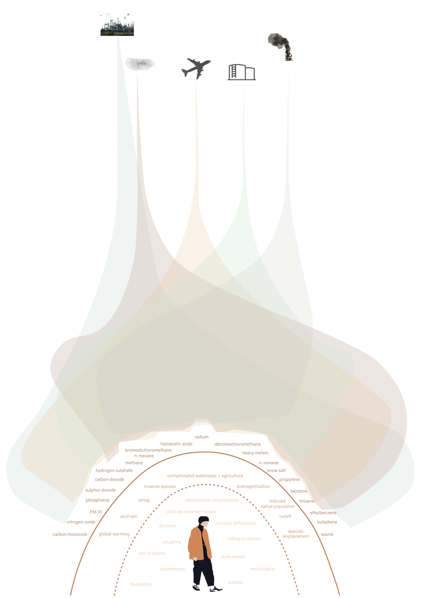

Through this semester, there have been four elements that stood out to me (people, ecologies, industries + pollution). The relationship between them can be defined as conflict and not beneficial to the people living in the space.
The industry is a stressor to both the people and nature, as it continual- ly pumps pollution into air, water, and soil. Pollution and the impacts of industry are issues that are compounded with time and lack of action. Many proposals are being set in East Boston to accommodate for new housing developments or future plans while ignoring the people already living in these communities.
Climate Ready plans, and developers have a very elite view of solutions in East Boston that focus on the protection and betterment of the Harbor side ans new condos. Eversource Substation ignores future flood paths while endangering the community its supposed to provide for.
It is important to address the harsh divide between the Industrial and the Ecological. Human development straddles the border of those ideas.
It is difficult to imagine an East Boston without industry.
Can we pose a mutually beneficial relationship to bridge the gap be- tween the people and their access to clean spaces?
Through this project I will begin to investigate how small movements with urban + landscapping strategies could remediate the air, soil and water. The aim is to give the communities in East Boston a method to deploy what is needed when needed, and to anticipate future needs in for the space.
Historical and Archival research is a method which involves seeking out and extracting evidence from archival records. These records are often preserved by institutions such as libraries and museums, or in the custo- dy of the organization. It is an essential part to explore a deeper history of the background. Records include letters, newspapers, photographs, computer files, scrapbooks, financial records, diaries or anything sent to the institution.
East Boston is used to be an industrial hub + shipyard. It was an essen- tial port for the movement of trade vessels into the United States. The urban fabric was defined by specific typologies, industry + movement.
Having access to these images and newpaper articles has created a precedent to industry has infiltrated the spaces of community.
- How the shipyard took over the waterways with large ships and oil.
- vHow the air was filled with smoke and smog as a result of heavy
industry and the burning of coal.
How access to the waterfront and greenscapes became limited as a
result of the growing airport.
East Boston is home to many native and diverse species of flora + fauna. Despite the heavy presence of industry, it is home to the Belle Isle Marsh, the green way and a handful of waterways.
This follows major questions of:
- The state of the current habitats? Have they reduced in size?
- Have pollutants impacted the natice ecosystems in the area?
The study of these ecologies will allow the people of East Boston to have a greater understandings of the habitats lost + remediated and provide a space to complie the information. It will be essential that the community is able to play a role in this strategy to educate and foster a relationship between individual and their environment.

The data analysis follows the sample collection + wunderkammer exhibit. This will be the numerical extension of the information.
This will have two elements:
- tables and charts to mark the pollutant levels from citizen scientists
+ EPA data sets
- visualization of the pollutants
While it is important to have the numeric value or the pollutants, it is often very difficult to consume or understand the data. It is unaccessible and most people do not understand the impacts of the numbers. Data visualization would be able to layout the pollutants and link them to understandable flows.